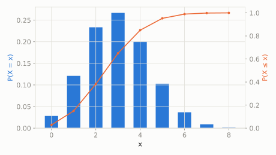

Same magic gumball machine, 30% chance of gold each time. Today you have 10 coins, so you play 10 times in a row.
Out of your 10 tries, what's the chance you get exactly 3 golden gumballs?
scipy.stats.binom
Binomial is just Bernoulli repeated n independent times and the successes summed up. Each trial doesn't care about the others -- same success chance p every time -- and we only care about the total count, not the order they happened in.
| parameter | default used here | meaning |
|---|---|---|
n | 10 | number of independent trials |
p | 0.3 | probability of success on each trial |
Same magic gumball machine, 30% chance of gold each time. Today you have 10 coins, so you play 10 times in a row.
Out of your 10 tries, what's the chance you get exactly 3 golden gumballs?
scipy.statsimport scipy.stats as stats
import numpy as np
dist = stats.binom(n=10, p=0.3)
print('P(exactly 3 gold):', round(dist.pmf(3), 4))
print('expected gold gumballs:', dist.mean())